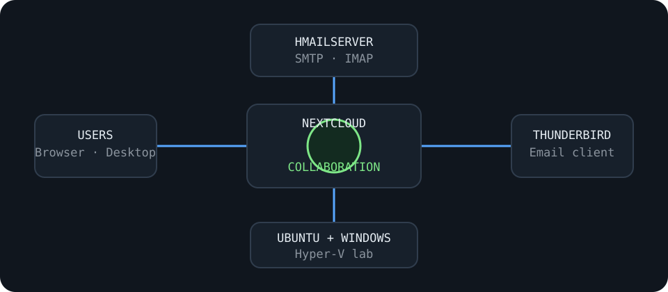

rafael@cloud:~/projects$ cat enterprise-communications.md
Enterprise Communication Platform
A cost-conscious collaboration, file-sharing and email solution deployed in a virtual enterprise lab.

Project Outcome
Completed
Planned, deployed and tested an integrated communication solution using Nextcloud on Ubuntu and hMailServer on Windows Server.
Technologies
Ubuntu ServerNextcloudNextcloud TalkhMailServerThunderbirdSMTPIMAPHyper-V
Implementation
✓ Configured user accounts and permission-based file sharing
✓ Enabled file upload, download and team collaboration
✓ Created an email domain and user mailboxes
✓ Integrated Thunderbird and Nextcloud Mail
✓ Tested SMTP, IMAP, messaging and remote access
Planning & Operations
Produced an implementation schedule, permissions matrix, security controls, acceptance criteria, user training plan, backup approach and ongoing maintenance recommendations.